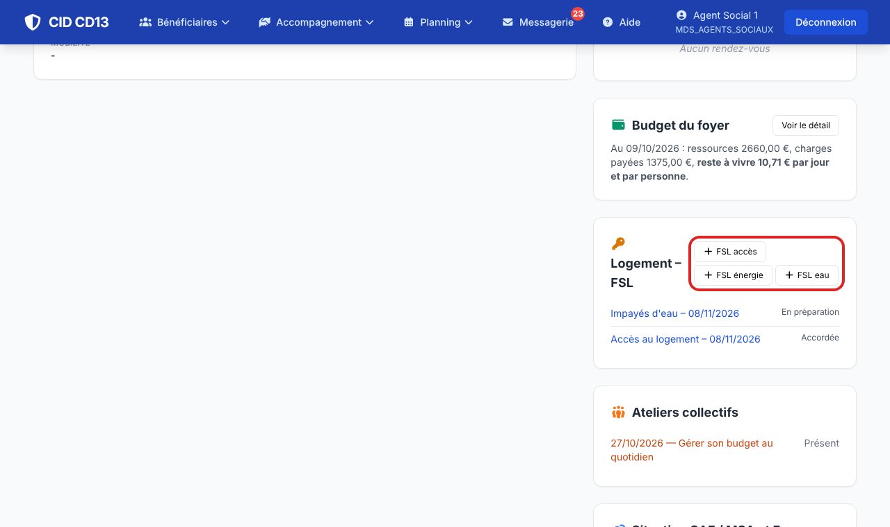
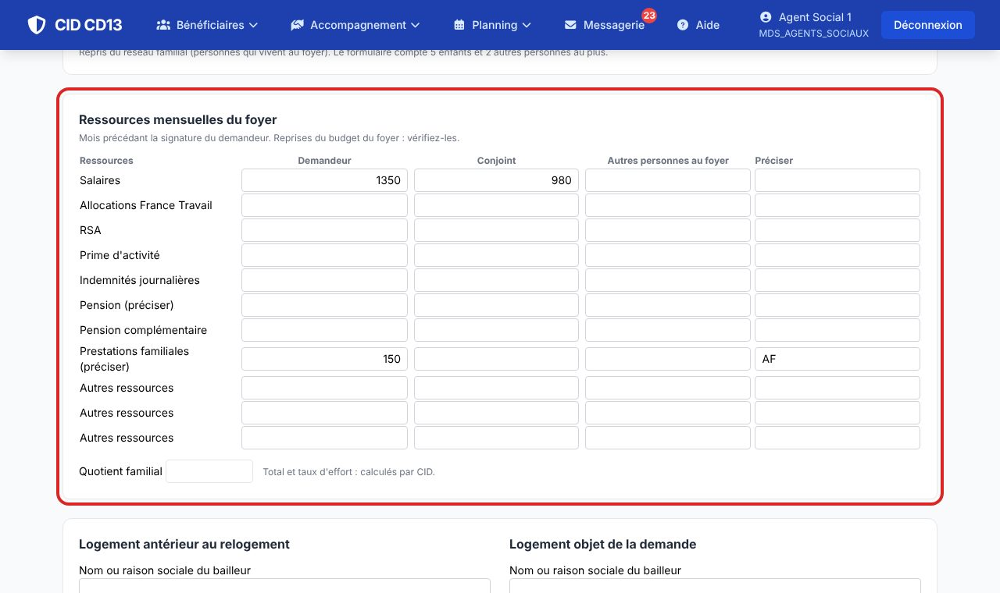
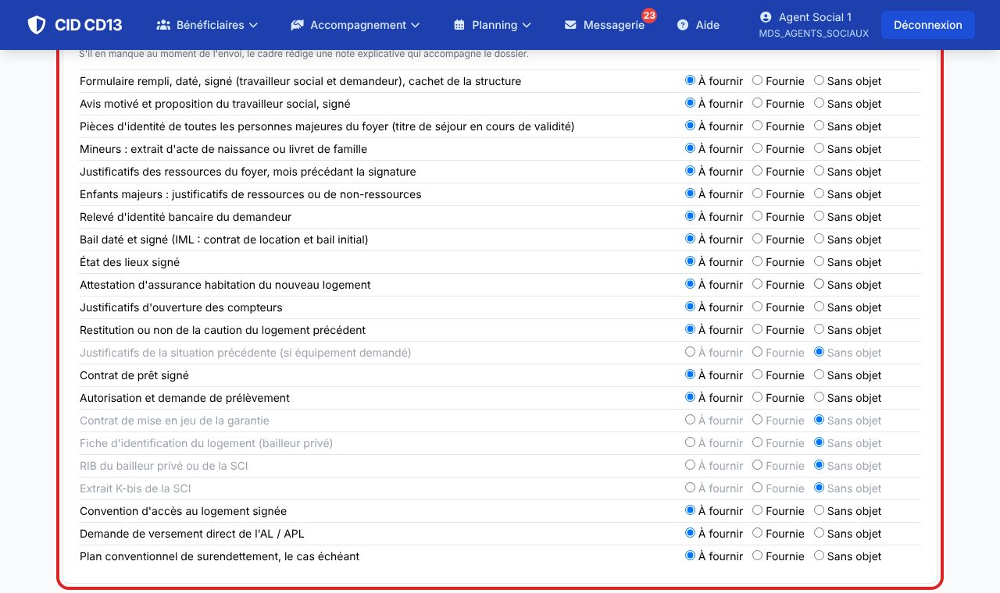
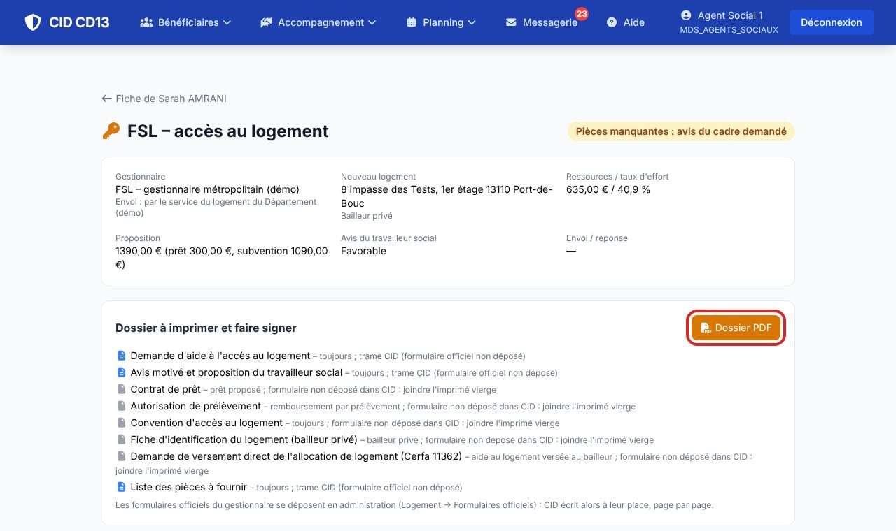
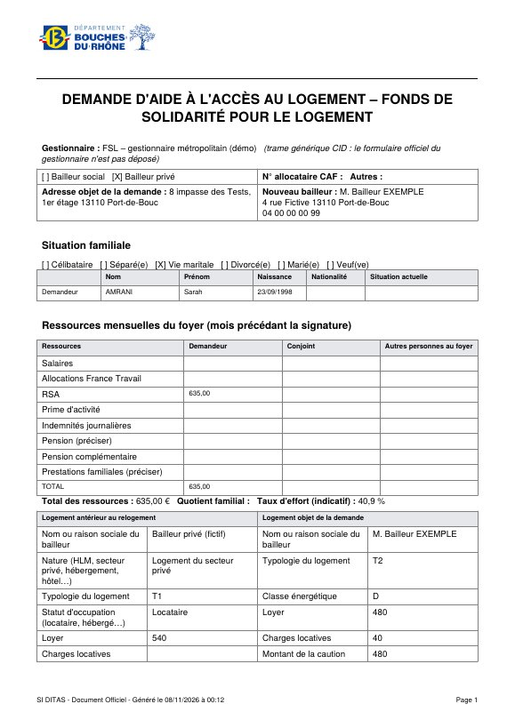
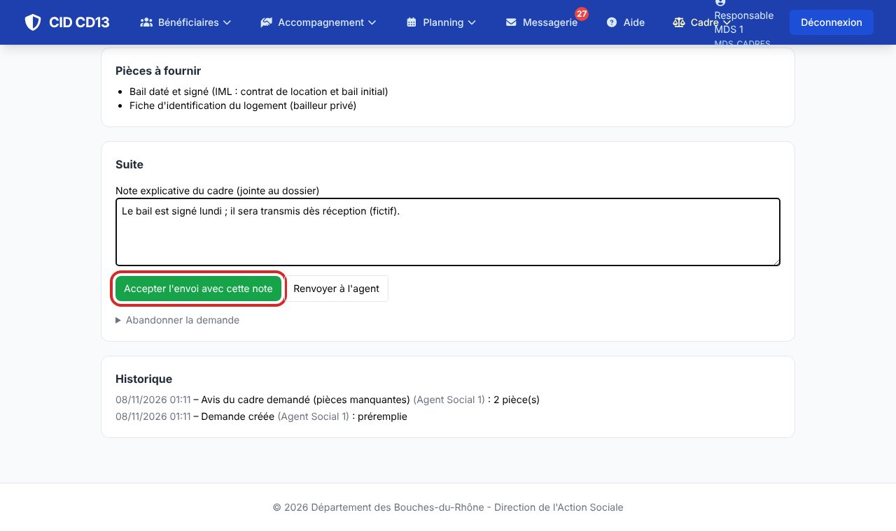
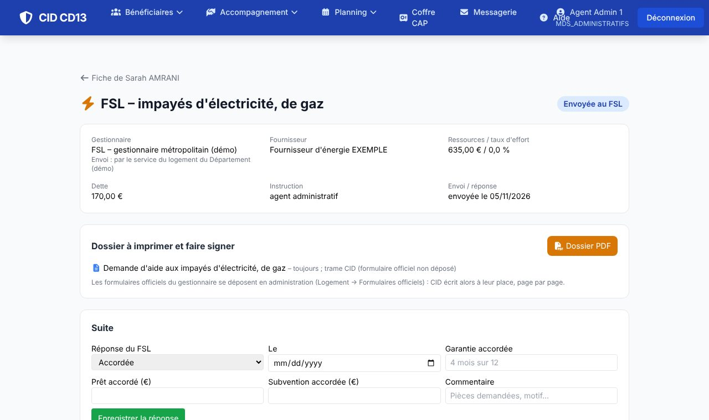

Avant de commencer
- Mettez à jour le budget du foyer et le réseau familial : la demande en reprend les ressources et la composition.
1Créer la demande

- Sur la fiche, encart Logement – FSL, cliquez sur FSL accès, FSL énergie ou FSL eau.
- CID ouvre la demande préremplie : n° CAF, situation familiale, personnes du foyer, ressources du budget, loyer et aide au logement actuels, vos coordonnées (courriel de la MDS).
2Compléter et vérifier


- Vérifiez chaque rubrique : ressources par personne, logement antérieur, nouveau logement (bailleur social ou privé, loyer, caution, AL prévisionnelle).
- Indiquez la proposition : garantie de paiement, caution, 1er loyer, compteurs, assurance, équipements ; puis l'avis motivé et le prêt ou la subvention proposés.
- Cochez l'état de chaque pièce, puis Enregistrer.
CID calcule le total des ressources et un taux d'effort indicatif, et prévient si un plafond du règlement est dépassé.
3Imprimer le dossier


- Dossier PDF : CID assemble les documents qui concernent la demande (contrat de prêt si prêt, fiche du logement si bailleur privé…).
- Quand les formulaires du gestionnaire sont déposés dans CID, ils sont remplis à leur place, page par page ; sinon CID produit une trame avec les mêmes rubriques et signale les imprimés à joindre vierges.
- Faites signer, ajoutez le cachet de la structure.
4S'il manque des pièces : l'avis du cadre

- L'agent clique sur Pièces manquantes : demander l'avis du cadre : le cadre reçoit un message CID.
- Le cadre rédige la note explicative (elle accompagne le dossier) et accepte l'envoi, ou renvoie la demande à l'agent.
5Envoi et réponse du FSL
- Enregistrer l'envoi (date). Le circuit de transmission du gestionnaire est rappelé sur la demande.
- À réception de la réponse : accordée (montants, garantie), ajournée (pièces demandées : complétez puis renvoyez) ou refusée.
6Énergie et eau

- Même démarche : CID préremplit l'adresse, le loyer, le foyer, les ressources et, pour l'énergie, la dette d'électricité non payée du budget du foyer.
- Indiquez le fournisseur ou le distributeur, la facture ou les dettes, la participation du ménage et le plan proposé par le fournisseur.
- Pour une facture de moins de 500 €, un agent administratif peut instruire la demande : cochez « Instruite par un agent administratif » et ajoutez un commentaire si besoin ; l'avis du travailleur social n'est alors pas demandé. Au-delà, CID demande l'avis d'un travailleur social.
Bon à savoir
- Les formulaires officiels se déposent vierges en administration (Logement → Formulaires officiels), avec un aperçu sur données fictives. Ils ne sont jamais publiés avec CID.
- Tout est daté dans l'historique de la demande.
Et ensuite ?
Cliquez sur une image pour l'agrandir. Le cadre rouge montre où cliquer ou quoi remplir. Toutes les données affichées sont fictives.